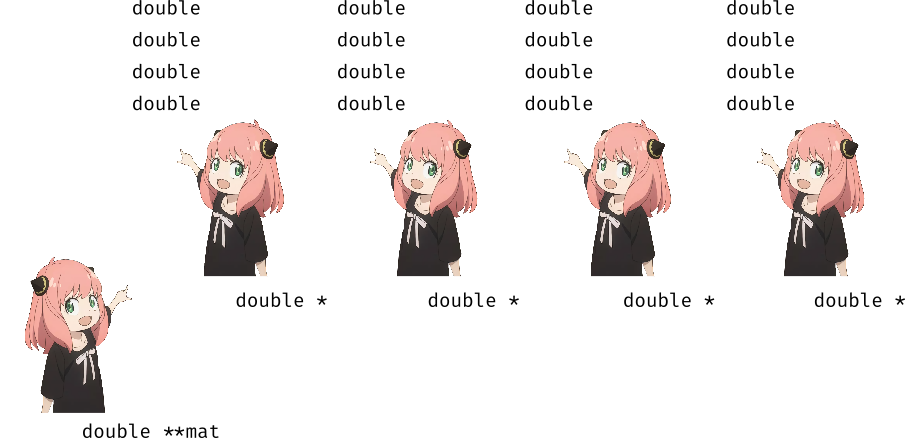

Representação Computacional
Na primeira aula vimos as seguintes representações para grafos:
Representação formal:
Para grafos sem pesos:
- $V = \{1 \dots N\} $
- $E = \{ (x, y) | x, y \in V; x \neq y\}$
Para grafos com pesos:
- $V = \{1 \dots N\} $
- $E = \{ (x, y) | x, y \in V; x \neq y\}$
- $w(i, j) : E\times E \rightarrow \mathcal{R^+}$ - função que recebe uma aresta e devolve seu peso.
Representação computacional (grafos sem pesos):
- $V$ pode ser representado só pelos números mesmo. Só preciso guardar $|V| = N_v$
- $E$ pode ser representado como uma matriz $A$ quadrada com $N_v$ linhas e colunas
$$ A_{i,j} = \begin{cases} 1 \text{ se } (i,j) \in E \\ 0 \text{ caso contrário } \end{cases} $$
Representação computacional (grafos com pesos):
Se o grafo tiver pesos, então usamos a seguinte definição para a matriz $A$:
$$ A_{i,j} = \begin{cases} w(i, j) \text{ se } (i,j) \in E \\ 0 \text{ caso contrário } \end{cases} $$
Arrays de arrays
O problema agora se torna representar essa matriz de maneira eficiente. Uma maneira comum de fazer isso é usando uma array de arrays. Ou seja, cada linha é um array (tipo double * em C). Agrupamos várias linhas em uma matriz criando um array em que cada elemento é outro array. Fazemos isso com o tipo double ** em C. Veja a figura abaixo.

Usar esta matriz é fácil!
double **mat; // veio de algum lugar e já está alocada
mat[2][5] = 5; // acessa elemento na linha 2, coluna 5
Alocação de Memória
Se cada linha da nossa matriz é um array, precisamos de dois níveis de alocação.
- um para guardar o array com todas as $V$ linhas
- $V$ alocações, uma para cada linha
Vamos pensar um pouco agora.
Exercise 1
A linha acima criou o primeiro nível, mas não criou cada linha da matriz. Na figura acima, ele criou as 4 Anya double *, mas não criou os 4 grupos de double que efetivamente guardam os dados.
Exercise 2
Pronto! Agora já conseguimos ir e usar nossa matriz!
- não inicializamos nenhuma casa da matriz.
- precisamos liberar essa memória depois de acabar
Essas duas coisas devem ser feitas na APS no PrairieLearn.